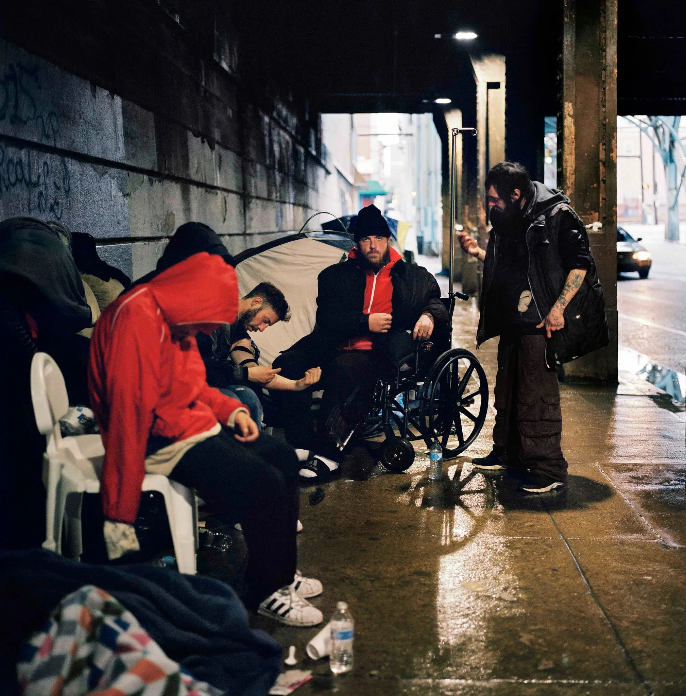
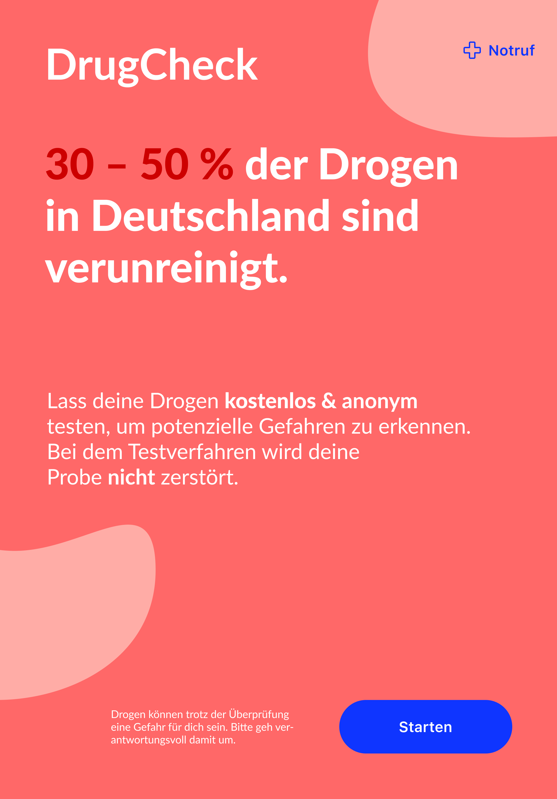
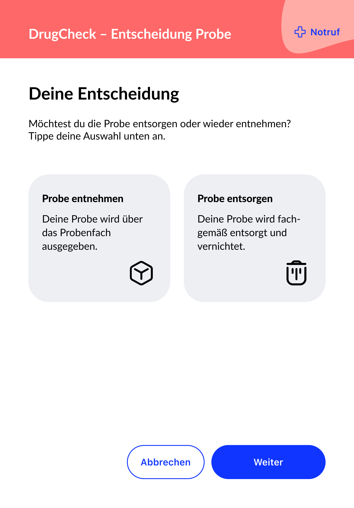
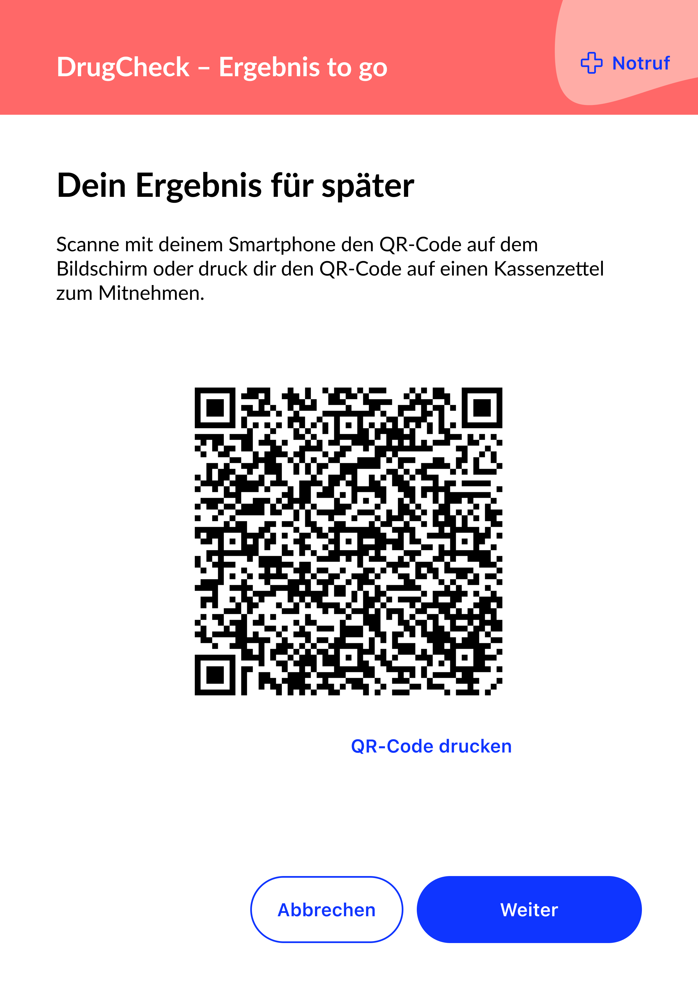
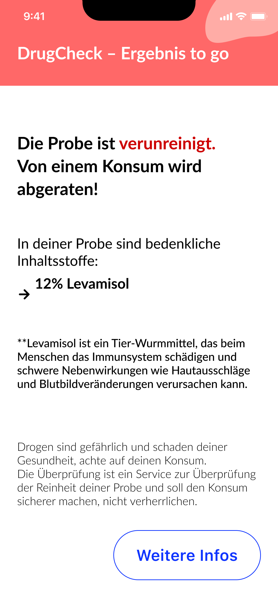

chemcheck
chemcheck
automated drug checking
automatisierter Drug Check
project
projekt
- 6th semester
- 6. Semester
- product design
- Produktgestaltung
- development of a conceptual smarttool
- Entwicklung eines konzeptionellen Smarttools
role in the project
Rolle im Projekt
My responsibilities were the housing concept, construction and renderings, as well as planning and building the physical model.
Meine Aufgaben waren die Konzeption des Gehäuses, Konstruktion und Renderings sowie die Planung und Umsetzung des Modellbaus.

Background statistics
Hintergrundstatistiken
5.1 million residents aged 18–64 consumed illegal substances in Germany in 2023.1
5.100.000 Bürger:innen im Alter zwischen 18–64 Jahren haben 2023 in Deutschland illegale Substanzen konsumiert.1
30–50% of drugs sold on the German black market are contaminated or overdosed.2
30–50% der Drogen, die auf dem deutschen Schwarzmarkt verkauft werden, sind verunreinigt oder überdosiert.2
2,000 deaths from contaminated or overdosed use. 17,200 people required inpatient treatment.3
2.000 Todesopfer durch verunreinigten oder überdosierten Konsum. 17.200 Personen mussten stationär behandelt werden.3
Up to 7 days can pass in drug-checking labs before ingredients are analysed and feedback is given.4
7 Tage kann es in den Laboren der Drug-Checking-Stellen dauern, die Inhaltsstoffe zu analysieren und eine Rückmeldung zu geben.4
drug checking
drug checking
In some European countries (Germany, Austria, the Netherlands, Switzerland, Spain and France) there are contact points for people with addictions and consumers where they can have their substances tested. The laboratory methods used are very precise but also time- and cost-intensive.
In einigen Europäischen Ländern (Deutschland, Österreich, Niederlande, Schweiz, Spanien und Frankreich) gibt es Anlaufstellen für Suchtkranke und Konsument:innen, an denen sie ihre Substanzen prüfen lassen können. Die angewandten Laborverfahren sind sehr genau, aber auch zeit- und kostenintensiv.
In some countries the service is offered not only in public consumption rooms but also at festivals. The goal of both options is not only to enable safer consumption but also, through testing substances, to educate consumers about risks without stigmatising them.
In einigen Länder wird der Service nicht nur in öffentlichen Konsumräumen, sondern auch auf Festivals angeboten. Das Ziel beider Möglichkeiten ist es nicht nur den sicheren Konsum zu ermöglichen, sondern auch durch das Testen von Substanzen, die Konsument:innen über Gefahren aufzuklären, ohne sie zu stigmatisieren.
Recording substances in a registry is the work of authorities. Hospitals and the police can benefit from this data.
Die Erfassung der Substanzen in einem Register ist Behördenarbeit. Krankenhäuser und die Polizei können von diesen Daten profitieren.
the ui
das ui
The UI is designed to be easy to understand. It informs users about the substances.
Das UI ist leicht verständlich aufgebaut. Es klärt über die Substanzen auf.
The amount needed for testing is only small.
Die benötigte Menge zum prüfen ist nur gering.
The result is displayed immediately but can also be retrieved via QR code. The device also offers the option to dispose of samples safely on site.
Das Ergebnis wird zwar unmittelbar ausgegeben, kann aber via QR-Code auch abgerufen werden. Das Gerät bietet ebenfalls an, die Proben direkt sicher zu entsorgen.




deployment areas & scenarios
einsatzgebiete & szenarien
- Container with machines at a festival
- Dashboard for authorities and institutions
- ChemCheck Cell in bar and nightlife districts
- Container mit Automaten auf einem Festival
- Dashboard für Behörden und Einrichtungen
- ChemCeck Cell im Bar und Ausgeviertel


References
- Bundeskriminalamt. (n.d.). Rauschgiftkriminalität: Statistiken und Lagebilder. Retrieved January 14, 2025, from https://www.bka.de/DE/AktuelleInformationen/StatistikenLagebilder/Rauschgiftkriminalitaet/rauschgiftkriminalitaet_node.html
- Drogerieinformationszentrum Zürich. (n.d.). Substanzen, Analysen und Warnungen [Saferparty]. Retrieved January 14, 2025, from https://saferparty.ch/substanzen-warnungen.html
- German Federal Government Commissioner on Narcotic Drugs. (n.d.). Drogen- und Suchtbericht. Retrieved January 14, 2025, from https://www.drogenbeauftragte.de/publikationen/drogen-und-suchtbericht.html
- Rundfunk Berlin-Brandenburg. (2023, August 7). Berlin startet erstes kostenloses Drug Checking. RBB24. Retrieved January 14, 2025, from https://www.rbb24.de/panorama/beitrag/2023/08/berlin-startet-erstes-kostenloses-drug-checking.html
Literaturverzeichnis
- Beauftragte der Bundesregierung für Drogen und Sucht. (o. D.). Drogen- und Suchtbericht. Abgerufen am 14. Januar 2025, von https://www.drogenbeauftragte.de/publikationen/drogen-und-suchtbericht.html
- Bundeskriminalamt. (o. D.). Rauschgiftkriminalität: Statistiken und Lagebilder. Abgerufen am 14. Januar 2025, von https://www.bka.de/DE/AktuelleInformationen/StatistikenLagebilder/Rauschgiftkriminalitaet/rauschgiftkriminalitaet_node.html
- Drogerieinformationszentrum Zürich. (o. D.). Substanzen, Analysen und Warnungen [Saferparty]. Abgerufen am 14. Januar 2025, von https://saferparty.ch/substanzen-warnungen.html
- Rundfunk Berlin-Brandenburg. (2023, 7. August). Berlin startet erstes kostenloses Drug Checking. RBB24. Abgerufen am 14. Januar 2025, von https://www.rbb24.de/panorama/beitrag/2023/08/berlin-startet-erstes-kostenloses-drug-checking.html